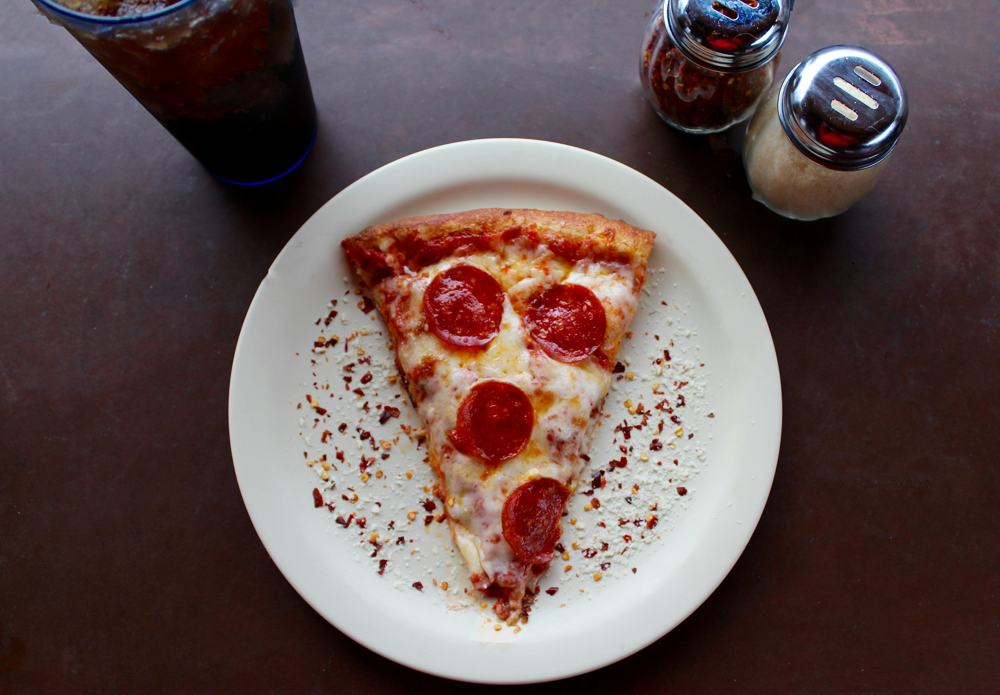

Back to Recipes Index
Pizza Recipe

Description
This pizza recipe features a homemade dough topped with fresh tomato sauce, mozzarella cheese, and your choice of toppings. Perfect for a family pizza night!
Ingredients
- 2 cups all-purpose flour
- 1 teaspoon salt
- 1 teaspoon sugar
- 1 packet (2 1/4 teaspoons) active dry yeast
- 3/4 cup warm water (110°F or 45°C)
- 1 tablespoon olive oil
- 1/2 cup pizza sauce
- 1 1/2 cups shredded mozzarella cheese
- Your choice of toppings (pepperoni, bell peppers, onions, mushrooms, etc.)
- Fresh basil leaves for garnish
Steps
- In a small bowl, dissolve sugar in warm water. Sprinkle yeast over the water and let it sit for about 5 minutes until frothy.
- In a large bowl, combine flour and salt. Make a well in the center and add the yeast mixture and olive oil.
- Mix until a dough forms. Knead the dough on a floured surface for about 5-7 minutes until smooth and elastic.
- Place the dough in a greased bowl, cover with a damp cloth, and let it rise in a warm place for about 1 hour or until doubled in size.
- Preheat the oven to 475°F (245°C).
- Once the dough has risen, punch it down and roll it out on a floured surface to your desired thickness.
- Transfer the rolled dough to a pizza stone or baking sheet.
- Spread pizza sauce evenly over the dough, leaving a small border around the edges.
- Sprinkle shredded mozzarella cheese over the sauce, then add your choice of toppings.
- Bake in the preheated oven for 12-15 minutes or until the crust is golden brown and the cheese is bubbly.
- Remove from the oven and let it cool for a few minutes.
- Garnish with fresh basil leaves before slicing and serving.
Enjoy your homemade pizza!